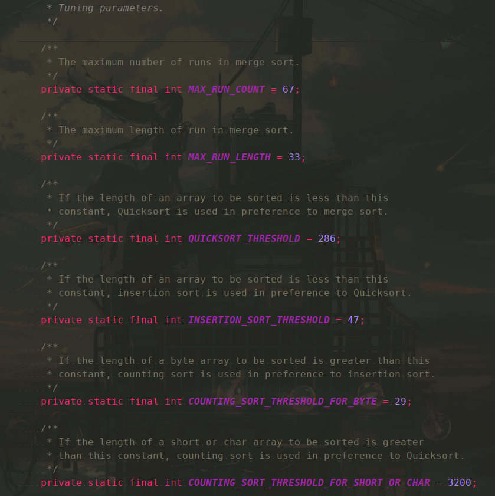
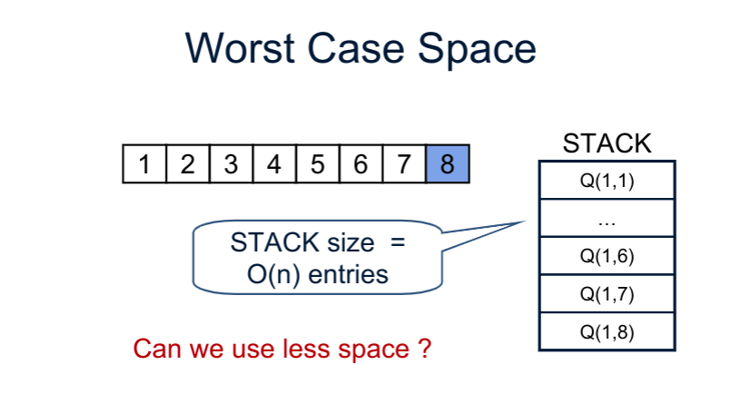
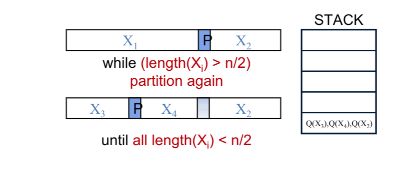
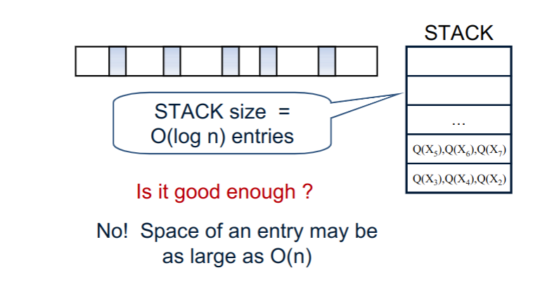
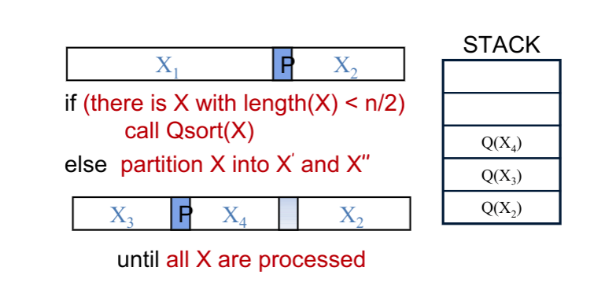
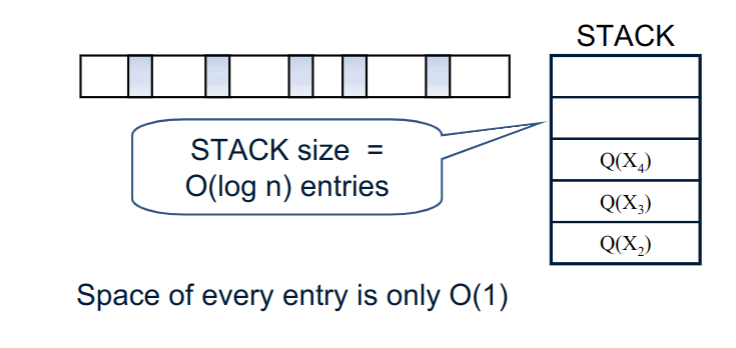

不同与归并排序mergeSort，快排序不需要使用额外的数组来辅助进行排序，但是这并不意味着快排序就属于原地排序 (in-place)。
快排序递归时需要使用栈空间，当执行递归函数调用时，需要将当前执行函数的状态压入线程栈中，递归调用完成后再一层层返回。快排序不属于原地排序，那么有没有方法进行优化呢？
Introduction
我们知道快排序 quickSort的排序性能很好，特别是针对于数组来说。JDK中 Arrays.sort 中针对于原始类型的数组的排序也是用到了快排序(双基准快排 DualPivotQuickSort )。
QuickSort in JDK
简单看一下，JDK8 中有关快速排序算法的实现。
Arrays.class 的一个 sort(int[]) 方法:
1 | /** |
DualPivotQuicksort 的实现就相对复杂一点，如果感兴趣的话可以自行查看相关源代码和实现文档, 这里只对有关快排序的内容进行简单地阐述。

从上面给到的文档内容看，我们关注以下的常量:
QUICKSORT_THRESHOLD=286: 在归并排序中用到，当数组元素数量小于286时，切换为快速排序；INSERTION_SORT_THRESHOLD=47: 在快速排序中用到，当数组元素数量小于47时，切换为插入排序；MAX_RUN_COUNT=67: 归并排序中最大运行次数；MAX_RUN_LENGTH=33: 归并排序允许的连续重复元素个数的最大值
主要排序方法如下:
1 | /* |
其他相关的更详细内容可以自行移步到 JDK 源代码文档中查看。
Problem
本文只讨论简单的最原始的快排序(单基准, single-pivot )实现(伪代码如下), 即
1 | QuickSort (if low < high): |
复杂度分析:
- Time complexity: $O(n log n)$
- Space complexity: $O(n)$ in worst case
由于上述实现的代码最后是两次递归调用，因此在最坏情况下，将需要 $O(n)$ 空间的函数调用栈。
最坏情况: 因为使用单基准元素对数组进行划分，如果每次都将数组划分为 $0$ 个元素和 $n-1$ 个元素两个部分的话，将出现最坏情况。
例如对于选择第一个元素作为基准元素，如果给定数组是逆序的(或者反过来，选择最后一个作为基准，给定数组已排序)，则出现最坏情况。
1 | public static void quickSort(int[] arr, int low, int high) { |
最坏情况示例:

Solutions
上面讨论了快排序存在的问题，接下来将针对上述问题提出解决方法。
Method I
对于每次数组划分，使得各个部分都小于 $n/2$, 其中 $n$ 为数组长度。

这种方法并不是最好的解决方案，栈中单个项目的大小仍可能为 $O(n)$ .

Method II
思想: 只对较小的划分部分调用递归函数，否则继续划分。(这种方式使用了尾递归，想了解更多可以留意本文最后给出的参考链接)


Implementation
下面是对上述解决方法II的实现，使用尾递归进行处理。
我们可以将之前的代码转换为如下，使用while循环以减少递归调用的次数。
1 | public static void quickSort(int[] arr, int low, int high) { |
这种实现方式，尽管减少了递归函数调用的次数，但是在最坏情况，所需的栈空间仍是$O(n)$. 因为我们仍可以将数组划分为$n-1$个元素部分和另一部分。
进一步优化:
以下的实现方式，在划分(partition)之后，只在较小的部分上执行递归函数。
1 | // java implementation |
上述优化后的实现方式中，我们只在更小的部分上递归调用函数；因此在最坏情况下，当所有递归调用中的两个部分大小相同时，使用$O(log\ n)$的额外空间。
References: